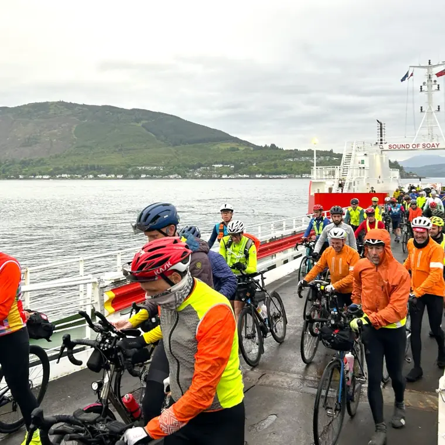

Live tracking
It is planned that trackers will be mandatory for all riders. These will be included in your entry fee.
-
Rider safety
Much of the route is in very exposed and remote areas, at times without a mobile phone signal. Tracking means we know where riders are.
-
Event management
Tracking lets us try and manage the flow of riders and the demand on controls across the event.
Coming later
Tracking information will be provided nearer the time, including how the tracker is issued and where the live map will be published.
